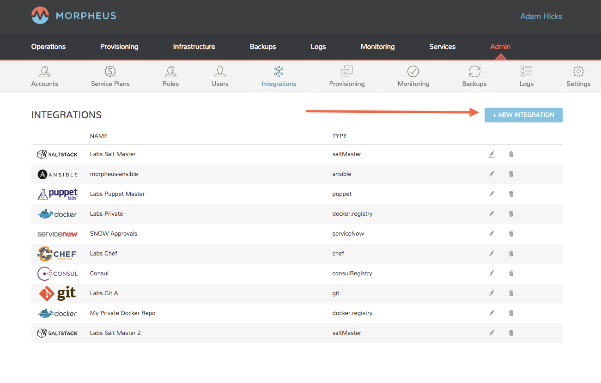
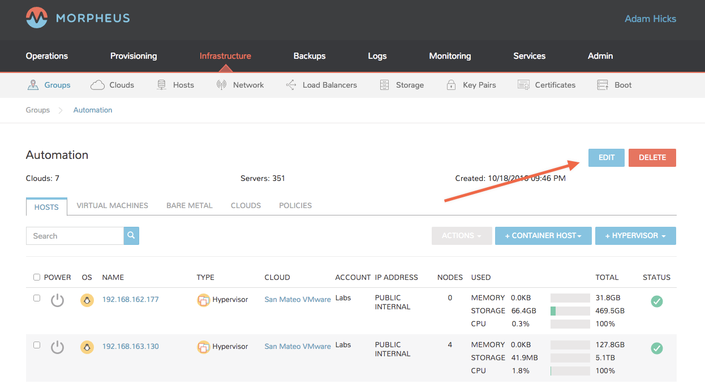
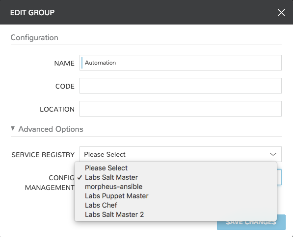
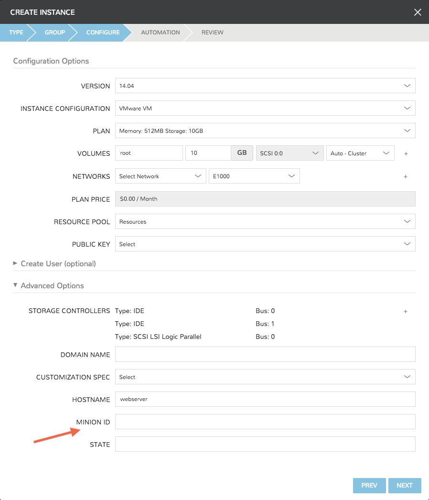
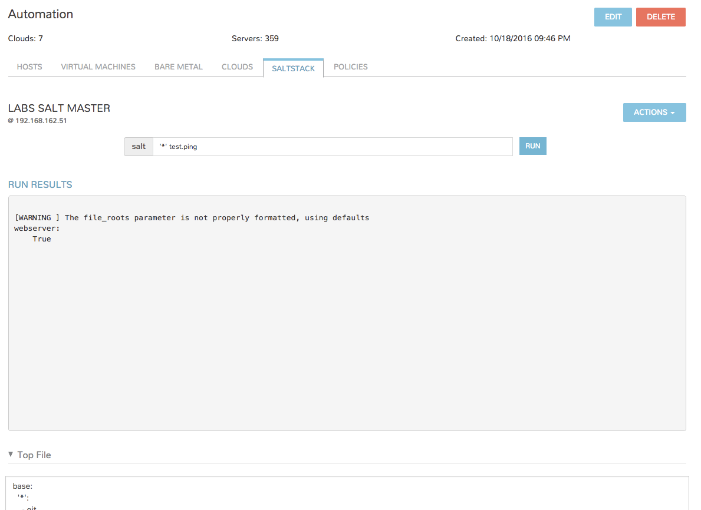
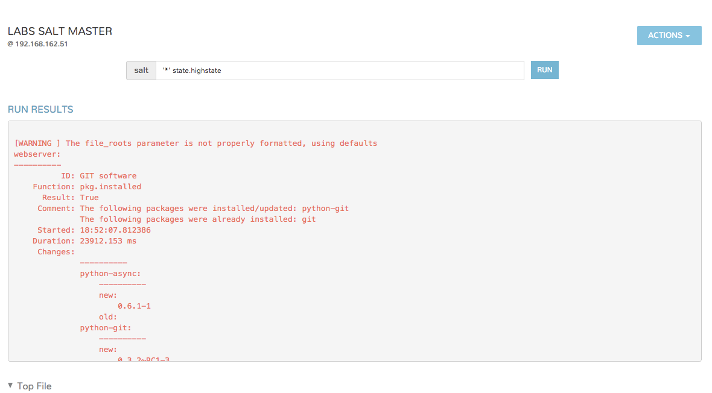
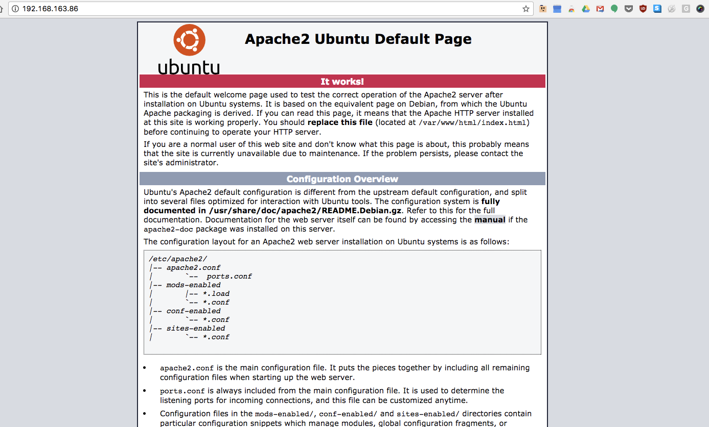

[[administration]]
Administration¶
There are several administrative integrations built into |morpheus| that make it great to work with within any organization ranging from small to large. Especially, with its built in white label support and multitenancy capabilities, managed service providers have a wide range of capabilities when it comes to managing customer accounts and users.
[[tenants]]
Tenants¶
Overview¶
The Tenants page displays a list of all Tenants. This page enables users to Create, Edit, and Delete Tenants. The list of Tenants displays the Tenant Name, Role, Total Instances, Total Users, and the Created Date.
Click the Tenant Name to drill into the Tenant View where you can again Edit, Delete, as well as Create Users, Edit Users, and Delete Users users belonging to the Tenant.
Create Tenants¶
To create Tenants
- Select the Administration link in the navigation bar.
- Select the Tenants link in the sub navigation bar.
- Click the Create Tenant button.
- From the New Tenant wizard input:
- Name
- Description (optional)
- Base Role Primary role of the Tenant. All User roles within the Tenant cannot exeed the permission of this Role.
- Limits Restricts the amount of Storage and Memory allocated to the Tenant
- Click the Save Changes button.
Edit Tenant¶
To edit a Tenant:
- Select the Administration link in the navigation bar.
- Select the Tenants link in the sub navigation bar.
- Click the Edit pencil icon on the row of the Tenant to edit.
- Edit the Edit Tenant settings.
Delete Tenant¶
To delete a Tenant:
- Select the Administration link in the navigation bar.
- Select the Tenants link in the sub navigation bar.
- Click the Delete trashcan icon on the row of the Tenant to delete.
- Confirm
Tenant View¶
The Tenant View displays a list of users belonging to the Tenant and their Name, Username, Email, and Role.
From this page: Create, Edit, and Delete users within the Tenant.
View Tenant¶
- Select the Administration link in the navigation bar.
- Select the Tenants link in the sub navigation bar.
- Click the Tenant Name on the row of the Tenant to view.
Create Tenant User¶
To create a Tenant User:
- Select the Administration link in the navigation bar.
- Select the Tenants link in the sub navigation bar.
#. Click the Tenant Name on the row of the Tenant where the user will be added. #. Click the Create User button. #. From the New User wizard input the fields below
- First Name of the user being created
- Last Name of the user being created
- Username used to login
- Email address of the new user
- Role to be inherited by the user
- Password
- Limits
- Restricts the amount of Storage and Memory the user can provision.
- Save Changes.
Edit a Tenant User¶
To edit a User:
- Select the Administration link in the navigation bar.
- Select the Tenants link in the sub navigation bar.
#. Click the Tenant Name on the row of the Tenant containing the user to be edited. . Click the Edit pencil icon of the row of the to edit. #. Edit User informaiton
Note
Name, Username, Passwords and e-mail addresses cannot be edited on Users created from Identity Source Integrations.
- Save Changes.
Delete Tenant User¶
To delete a Tenant User
- Select the Administration link in the navigation bar.
- Select the Tenants link in the sub navigation bar.
- Click the Tenant Name on the row of the Tenant containing the user.
- Click the Delete trashcan icon of the row of the user to delete.
- Confirm
Identity Sources¶
There are several built in single sign-on integrations included with
|morpheus| . These can be configured via the Identity Sources button
in Admin -> Accounts. These integrations include linking
capabilities with LDAP, Active Directory, Okta, and Jump Cloud. One can
even map these sign on tools to equivalent roles in |morpheus| so at
first log in users are assigned the appropriate role.
image::administration/identity_sources.png[caption=”Figure 1: “, title=”Identity Source Management Integrations”, alt=”Identity Source Management Integrations”]
==== Active Directory
Active Directory is Microsoft’s primary authentication service widely used in Enterprise organizations and even via Microsoft’s cloud services. While Active Directory also supports LDAP protocol support (which |morpheus| can integrate with as well), the main active directory integration can also be utilized. It is even possible to map Active Directory groups to equivalent Roles within |morpheus| .
NOTE: To use Active Directory, a valid / trusted SSL certificate must be in place on the Active Directory services (self signed will not work).
Adding an Active Directory integration is fairly straightforward. Simply click the ‘Add Integration’ button in Identity Sources and from the type dropdown choose “Active Directory”.
image::administration/add_active_directory.png[caption=”Figure 2: “, title=”Modal form entry for Active Directory”, alt=”Modal form entry for Active Directory”]
The following fields are important for integrating active directory:
- Name: Unique name for authentication type.
- AD Server: Hostname or IP address of AD Server.
- Domain: Domain name of AD Domain.
- Binding Username: Service account username for bind user.
- Binding Password: Password for bind service account.
- Default Role: The default role a user is assigned if no group is listed under AD user that maps under Role Mappings section.
- Service Account Holder: This is the admin account type in |morpheus| and an AD group can be created and populated to a user that this role should be assigned. Roles are assigned dynamically based on group membership.
TIP: Make sure to check the sync login box which will allow |morpheus| to sync the AD account on the |morpheus| Appliance.
Now users can login to the UI via their active directory username.
NOTE: Only the username is required with password not the username@domain.
Plans & Pricing¶
Overview¶
The Plans & Pricing page displays a list of all of your available service plans. From the service plans page you will be able to Create, Edit, and Delete service plans, as well as review basic plan details. The list of plans displayed on this page displays planName, Description, Instances Layout, Memory, Storage, and Cost, as well as an action column to edit and delete. A default set of Service Plans are created in |morpheus| . They provide a means to set predefined tiers on memory, storage, cores, and cpu. Price tables can also be applied to these so estimated cost per virtual machine can be tracked as well as pricing for customers.
Create Service Plan¶
To create service plan
- Select the Administration link in the navigation bar.
- Select the Plans & Pricing link in the sub navigation bar.
- Click the Create Service Plan button.
- From the New Service Plan wizard, input:
- Name
- Code used as a unique identifier in the API and CLI. **
- Storage size in megabytes.
- Memory size in megabytes.
- Cost is internal cost of plan.
- Price is what the service offering will be priced at.
- Instance Types that will be associated with this plan.
- Click the Save Changes button to save.
Edit Service Plan¶
By default, these options are fixed sizes but can be configured for
dynamic sizing. A service plan can be configured to allow a custom user
entry for memory, storage, or cpu. To configure this, simply edit an
existing Service Plan. These all can be easily managed from the
Admin -> Service Plans section.
To edit service plan:
- Select the Administration link in the navigation bar.
- Select the Plans & Pricing link in the sub navigation bar.
- Click the Edit pencil icon on the row of the plan to edit.
- Edit the following Edit Service Plan.
- Click the Save Changes button to save.
Delete Service Plan¶
To delete service plan
- Select the Administration link in the navigation bar.
- Select the Plans & Pricing link in the sub navigation bar.
- Click the Delete trashcan icon on the row of the# plan to delete.
- Confirm
Roles¶
Role Management Overview¶
Within |morpheus| is a wide array of role based access control capabilities. These roles can be managed within the Admin -> Roles section of the morpheus UI as well as through the API or CLI. They are designed to be robust enough to fit within a wide array of enterprise and managed service provider scenarios so they can be a bit hard to grasp at first, but should make sense once a few simple concepts are explained. There are two types of roles within |morpheus| called Tenant and User based roles. Both sets of roles allow restrictions to be imposed on a user at the feature access level. Entire sections within the appliance UI can be hidden based on the specified access levels for features within morpheus. Features have different access scopes that can be selected from and can range depending on the specific feature. The most common scope set involves none, read, and full. Instance Type access is also common among both role types which allow the administrator to restrict which service catalog items they are allowed to provision within |morpheus| .
There are several handy tricks for creating new roles within morpheus and users can be assigned more than one role. When a user is assigned more than one role, permissions are granted by the role with the highest level of scope access. This allows roles to be built with small subsets of features and combined to grant different individuals relevant permission control.
Note
Feature access control not only applies to the |morpheus| UI but also applies to the public developer API. It is sometimes necessary to logout and back in for changes to a users feature access level to be respected.
Role Types¶
Tenant Roles¶
A Tenant based role (formerly called an Account based role) is used to ensure access control enforcement across an entire tenant with many sub-users. This allows the subtenant to manage their own set of internal user based roles without worrying master tenant involvement in setting them up. The master tenant is the only tenant able to create and manage these types of roles. When editing a Tenant, a singular tenant role can be assigned to the account. Users within the tenant can be assigned roles but those user based roles will never be able to supersede the level of access granted by the tenant role. This allows a super administrator the ability to restrict access at the department or organization level without having to worry about per user access control within said tenant.
Tenant roles also have an additional section not in User based roles related to Cloud Access. Cloud Access allows the master tenant the ability to assign cloud integration resources to specific subtenants or groups of subtenants. An example would be granting access to a specific VMware cluster only to a subset of tenants using the tenant based role control.
User Roles¶
User roles can be created by any tenant given permission at the tenant role level. These allow tenants to manage their own sets of users and their levels of access. They also allow tenants to control which users have access to specific “Groups” for provisioning into within morpheus. Groups are not cross tenant and therefore need to be controlled within the individual tenant in |morpheus| .
Master tenants are able to create a special type of user role called a multi-tenant user role. A multi-tenant user role is copied / duplicated down to all subtenants within morpheus. These can be viewed as pre-canned role templates available to new tenants when their account is first created. Any changes made to the main role are propagated down to the subtenants version of the shared role so long as the subtenant has not previously adjusted/changed that role. The moment a subtenant makes adjustments to the shared role within their account, it is unlinked from the parent role and treated entirely independently.
Another note about user roles is that when a user role is copied down to a subtenant, the permission scopes cannot supersede the tenants assigned tenant role. If they do they are automatically downgraded when propagated to the specific tenant. Any changes made to the tenant role will automatically ensure roles within the tenant are downgraded appropriately.
Roles and Identity Sources¶
It is very common for large enterprises to have an existing identity source that they would like to plugin to morpheus for authentication. This includes services like LDAP, Active Directory, OKTA, Jump Cloud, One Login, and SAML. When using these services it becomes important to configure a role mapping between the morpheus role assignments to the equivalent identity source groups/roles the user belongs to. This is configurable within the identity source management UI. Sections are provided allowing things like LDAP groups to be directly mapped to specific roles within morpheus. If a user matches more than one LDAP/role group then both sets of roles are applied to the user automatically. Configuring Identity Sources is done in Tenant management found in Admin -> Tenants, and has to be configured on a per tenant basis.
Resource Limits¶
While it is possible to restrict usages by roles assigned to a tenant or role with max memory utilizations and max storage utilizations, it is preferred to now control this at the Policy level within a group or cloud. |morpheus| provides a large swatch of policy types that can be assigned globally or to specific tenants both globally, and per cloud/group entity.
[[users]]
Users¶
=== Overview
The Users page displays a list of all users. From the users page: Create, Edit, and Delete users. The list of users displayed on this page displays Account, Name, Username, Email, and Role.
=== Create User
To create user
. Select the Administration link in the navigation bar.
. Select the Users link in the sub navigation bar.
. Click the Create User button.
. From the New User Wizard input
- First Name
- Last Name
- Username used to login.
- Email address of the new user.
- Role to be inherited by the user.
- Password
- Storage size set in megabytes. (0.0 is unlimited, this is the amount of storage a role can provision.)
- Memory size set in megabytes. (0.0 is unlimited, this is the amount of memory a role can provision.)
. Click the Save Changes button.
=== Edit User
To edit user
. Select the Administration link in the navigation bar.
. Select the Users link in the sub navigation bar.
. Click the Edit pencil icon on the row of the user to edit.
. From the User Wizard input:
- First Name
- Last Name
- Username used to login.
- Email address of the new user.
- Role to be inherited by the user.
- Password
- Storage size set in megabytes. (0.0 is unlimited, this is the amount of storage a role can provision.)
- Memory size set in megabytes. (0.0 is unlimited, this is the amount of memory a role can provision.)
. Click the Save Changes button.
=== Delete User
To delete user
. Select the Administration link in the navigation bar. . Select the Users link in the sub navigation bar. . Click the Delete trashcan icon on the row of the user to delete. . Note: You will be prompted for confirmation on this action.
Integrations¶
Administration -> Integrations
Ansible¶
Overview¶
|morpheus| appliance supports Ansible integration for configuration management. |morpheus| accomplishes this by integrating with an existing repository of playbooks as the master in a master-slave Ansible architecture.
To get started the only requirement is an existing repository for playbooks in a very simple structure.
Add Ansible Integration¶
- Navigate to Administration -> Integrations and select + New Integration
- Select Integration Type “Ansible”
- Populate the following fields:
- Name: Name of the Ansible Integration in |morpheus|
- Enabled: Enabled by default Ansible Git URL:: https or git url format of the Ansible Git repo to use
- Keypair: For private Git repos, a keypair must be added to |morpheus| and the public key added to the git account.
- Playbooks Path: Path of the Playbooks relative to the Git url.
- Roles Path: Path of the Roles relative to the Git url.
- Group Variable Path: Path of the Group Variables relative to the Git url.
- Host Variables Path: Path of the Host Variables relative to the Git url.
- Save Changes
Once you have completed this section and saved your changes you can set up a Cloud or Group to utilize this integration.
Scope Ansible Integration to a Cloud¶
- Navigate to Infrastructure -> Clouds
- Edit the target Cloud
- Expand the Advanced Options section
- In the Config Managment dropdown, select the Ansible Integration.
- Save Changes
Once an Ansible integration is added to a Cloud, a new “ANSIBLE” tab will appear on the Cloud details page, populated with the Ansible integrations Playbook and Roles, as well as an editable Inventory list.
Scope Ansible Integration to a Group¶
- Navigate to Infrastructure -> Groups
- Edit the target Group
- Expand the Advanced Options section
- In the Config Managment dropdown, select the Ansible Integration.
- Save Changes
Once an Ansible integration is added to a Group, a new “ANSIBLE” tab will appear on the Group details page, populated with the Ansible integrations Playbook and Roles, as well as an editable Inventory list.
Provisioning Options¶
When provisioning Instances into a Cloud or Group with a Ansible Integration added, an Ansible section will appear in the Config section of the provisioning wizard. By default, Ansible is enabled, but can be disabled by expanding the Ansible section and unchecking Enable Ansible.
Ansible Integration Provisioning options:
- Enable Ansible
- Select to bootstrap
- Ansible Group
- Ansible Inventory Group. Use existing group or enter a new group name to create a new group. Leaving this field blank will place instance in the “unassigned” inventory group.
- Playbook
- Playbook(s) to run. The .yml extension is optional.
Running Playbooks¶
Playbooks can also be ran on all inventory groups, individual groups, or added as a task and ran with workflows.
To run ansible on all or a single inventory group, in the Ansible tab of the |morpheus| Group page, select the Actions dropdown and click Run.
In the Run Ansible modal, you can then select all or an individual group, and then all or a single Playbook, as well as add custom tags.
Playbook’s can also be added as tasks to workflows in the Provisioning -> Automation section, and then selected in the Automation pane during provisioning of new instances, when creating app templates, or ran on existing instances using the Actions -> Run Workflow on the Instance or Host pages.
Chef¶
Overview¶
|morpheus| can integrate with one or multiple chef servers to be used for bootstrapping wile provisioning or as tasks in workflows in the Automation section. These workflows can then be ran during provisioning in the provisioning wizard Automation pane, or on an exiting instance by selecting Actions- Run Workflow. Workflows can also be added to instances in the template and app sections.
Add Chef Integration¶
- Navigate to Administration -> Integrations and select + New Integration
- Select Integration Type “Chef”
- Populate the following fields:
- Name: Name of the Chef Integration in |morpheus|
- Chef Endpoint: url of chef server api endpoint in https://api.example.com format. Do not add /organization/xxxx here, which is populated in the Chef Organization field
- Chef Version: 12.3.0 by default, can be changed to use a different/more recent version of chef
- Chef Organization: Chef Server Organization
- Chef User: Chef Server User
- User Private Key: The private key of the user with access to this chef server
- Organization Validator: Validator key for the organization
- Save Changes
The added Chef Integration is now available for use in |morpheus| . The Chef Integration can be added to Clouds or Groups to auto-bootstrap nodes and specify Environment, Node ID, Runlist, Attributes and Tags when creating instances. The Chef integration can also be selected in the Chef Server dropdown when creating a Chef Bootstrap type task.
Scope Chef Integration to a Cloud¶
- Navigate to Infrastructure -> Clouds
- Edit the target Cloud
- Expand the Advanced Options section
- In the Config Managment dropdown, select the Chef Integration.
- Save Changes
Scope Chef Integration to a Group¶
- Navigate to Infrastructure -> Groups
- Edit the target Group
- Expand the Advanced Options section
- In the Config Managment dropdown, select the Chef Integration.
- Save Changes
Provisioning Options¶
When provisioning Instances into a Cloud or Group with a Chef Integration added, a Chef section will appear in the Config section of the provisioning wizard. By default, Chef is enabled, but can be disabled by expanding the Chef section and unchecking Enable Chef.
Chef Integration Provisioning options:
- Enable Chef
- Select to bootstrap
- Chef Environment
- Populate Chef environment, or leave as _default
- Chef Node ID
- Defaults to instance name, configurable.
- Chef Runlist
- Add runlist
- CHEF ATTRIBUTES
- Add Chef Attributes
- CHEF TAGS
- Add Chef tags
Consul¶
|morpheus| can integrate with Consul to automatically install the Consul Agent in Client Mode on Instances and configure communication with the Consul host.
Add Consul Integration¶
Navigate to Administration -> Integrations and select + New Integration
Select Integration Type Consul Service Registry
Populate the following fields:
- Name
Name of the Consul Integration in |morpheus|
- Enabled
Enabled by default
- Consul Host
IP or Url of the Consul Host
- Consul Http Port
Http port of the Consul Host
- Username
Consul Host User
- Password
Consul Host User Password
- Datacenter ID
Validator key for the organization
Save Changes
The added Consul Integration is now available for use in |morpheus| , but must be scoped to a Cloud or Group to automatically install the Consul Agent while provisioning.
Scope Consul Integration to a Cloud¶
- Navigate to Infrastructure -> Clouds
- Edit the target Cloud
- Expand the Advanced Options section
- In the Service Registry dropdown, select the Consul Integration.
- Save Changes
Scope Consul Integration to a Group¶
- Navigate to Infrastructure -> Groups
- Edit the target Group
- Expand the Advanced Options section
- In the Service Registry dropdown, select the Consul Integration.
- Save Changes
And that’s it. After your integration is set up, all containers deployed within the Group or Cloud integrated will provision with the Consul Agent in Client Mode, gossiping to your Consul Server!
Docker Registry¶
Overview¶
Without any additional configuration |morpheus| can provision images from Docker’s public hub at https://hub.docker.com/ using their public api at https://index.docker.io/v1/
However, many organizations maintain private Docker registries for security measures. Additional public and private Docker registries can be added to Morpheus.
Adding a Docker Registry Integration¶
Navigate to Administration -> Integrations
Click “New Integration”
Select the Docker Repository Type
Add the following:
- Name
Name for the Registry in |morpheus|
- Repository url
Docker Registry url or IP address
- Username
Username if private registry
- Password
Password if private registry
Save Changes
Note
You must either have signed certificates for your registry or configure your docker host(s) to accept insecure registries
Provisioning an Instance from Docker Registry¶
Docker images from the Integrated Registry can be provisioned using the generic Docker Instance Type, or by adding images to Node Types for custom Library Instance Types.
//add provisioning info and creating docker node types
Infoblox¶
|morpheus| can integrate with Infoblox for IP address assignment. To add a Infoblox integration into |morpheus| :
- Add Infoblox as a Network Service integration
- Add Infoblox IP Pool(s) to your network(s)
- Configure your cloud(s) domain
- When provisioning, select Network with Infoblox pool added
Add Infoblox as a Network Service Integration¶
Navigate to Infrastructure -> Networks and select the Services tab

In the Services tab, select +ADD SERVICE, select Infoblox, and provide the following:
Add Pool Server
- Name
- URL (wapi url + version) example https://x.x.x.x/wapi/v2.2.1
- Username
- Password
Tip
You can find your Infoblox wapi version in the wapi doc on your Infoblox server at https://x.x.x.x/wapidoc

Save Changes and your Infoblox networks will be populated and available in the Network -> IP Pools section of |morpheus| .
Next we will need to add an Infoblox Network pool to a network in order to use the pool(s) during provisioning.

Add Infoblox IP Pool(s) to your network(s)
- Navigate to In Infrastructure - Networks, and in the Networks tab:
- Find and edit the network you want to assign an Infoblox pool to.
- For static IP assignment, Populate the Gateway, DNS, and CIDR info for the network, and deselect DHCP server.
- In the NETWORK POOL drop down, select the Infoblox network to assign IPs from.
- Save Changes

Configure your cloud(s) domain¶
The domain entered in you cloud(s) settings needs to match an Infoblox zone. To add a domain to your cloud(s)
- Under Infrastructure - Clouds, edit your cloud settings
- In the domain field, enter your domain
- In v2.9.x and prior, the domain field is at the top of the Cloud Config modal. .. image:: /images/administration/infoblox-ebde8.png
- In v2.10, the domain field is under Advanced Settings in the Cloud Config modal. .. image:: /images/administration/infoblox-976bd.png
- In v2.10.1 and later, a Domains section has been added in the Infrastructure -> Networks Section, and there is now a Domain dropdown to select a domain from the Networks section in the Cloud Config modal.
- Infrastructure -> Network -> Domains

- Cloud Configuration

Provisioning with Infoblox Pool¶
Once the Infoblox integration has been configured, while provisioning you can now select networks that have the Network Pools added, and the name of the Infoblox IP Pool will populate to the right of the selected network:

The during provisioning, your instance IP will be assigned by Infoblox:

[[jenkins]]
Jenkins¶
AWS Route53¶
Overview¶
|morpheus| integrates directly with Amazon Route 53 to automatically create DNS entries for Instances provisioned to a configured Cloud or Group. |morpheus| also syncs in Route 53 Domains for easy selection while provisioning, or setting as the default Domain on a Cloud or Network.
Add Route 53 Integration¶
Route 53 can be added in the Administration or Infrastructure sections:
In Administration -> Integrations, select + New Integration
In Infrastructure -> Networks -> Services, select Add Service
Provide the following:
- TYPE
Route 53
- NAME
Name for the Integration in |morpheus|
- REGION
AWS Region for the Integration
- ACCESS KEY
AWS User IAM Access Key
- SECRET KEY
AWS User IAM Secret Key
Once saved the Integration will be added and visible in both Administration -> Integrations and Infrastructure -> Networks -> Services
Note
All fields can be edited after saving.
Domains¶
Once the integration is added, Route 53 Domains will sync and listed under Infrastructure -> Networks -> Domains.
Note
Default Domains can be set on Networks and Clouds, and can be selected when provisioning. Additional configuration options are available by editing a domain in Networks -> Domains
Configuring Route 53 with Clouds and Groups¶
DNS Integrations are available in the DNS Integration dropdown in Cloud and Group settings.
|morpheus| will register Instances with the DNS provider when provisioned into a Cloud or Group with a DNS Integration added.
Add DNS Integration to a Cloud¶
- In Infrastructure → Clouds edit the target Cloud.
- Expand the Advanced Options section.
- In the DNS Integration dropdown, select an available DNS Integration.
- Save Changes
Add DNS Integration to a Group¶
- In Infrastructure → Groups select the target Group.
- Select the Edit button for the Group
- Expand the Advanced Options section.
- In the DNS Integration dropdown, select an available DNS Integration.
- Save Changes
Note
Instances provisioned into a Cloud or Group with a DNS Integration added will be registered as instancename.domain with the DNS Provider during provisioning, and de-registered at teardown.
Salt¶
Overview¶
|morpheus| integrates with an existing Salt Master for seamless deployment of Salt States to Minions provisioned from |morpheus| .
Add Salt Integration¶
To get started browse to Admin -> Integrations from within |morpheus| .
Once there simply add a New Integration
And then scope the integration to your existing Salt Master by ip address. Make sure that the username entered is one with proper escalation privileges for running Salt, and point the Working Directory at the directory on your Master where your States live.
Note
|morpheus| will allow you to run States from a git backend, but in v2.10 you will not see states from a git backend within |morpheus|
Scope Salt Integration to Group Or Cloud¶
Configuration Management integrations like Saltstack apply to the Infrastructure Group abstraction in |morpheus| . To ties yours in, browse to Infrastructure -> Groups in |morpheus| and select the group that you would like to tie to your Salt Master.
From here select Edit
And from the options toggle Advanced Options and select your Saltstack integration in the Config Management dropdown.
After a page refresh you should see your Saltstack tab in your group page

Clicking on it will reveal a page that includes:
- An interface to run Salt Master commands
- Parsed Top File
- Available States
image::administration/salt-ccaca.png[]
The classic example of running
salt ‘*’ test.ping
will return empty unless there are existing Minions with accepted keys on the Master. However, provisioning Minions via |morpheus| is extremely easy.
Provisioning with Saltstack¶
To do so, provision as usual and Instances within the Group tied to the Saltstack Integration will now show additional options on the Configure pane
Minion ID defaults to the hostname, and a State can be applied directly at provision time.
Note
Only States served from the Master’s Working Directory can be applied at provision, not States from a git backend
Once your instance is provisioned and key negotiation has completed you will be able to access it and run commands via the integrated Salt command center in your Group.
If you did not apply a state at provision time now you will be able to run State commands through |morpheus| .
In our example the Apache State from a git backend was applied successfully to our newly created vm.
Provisioning Settings¶
Administration -> Provisioning
- Settings
- Configure Global Provisioning, Cloud-init and PXE Boot settings.
- Environments
- Create and manage Environment Tags
- Licenses
- Add License to apply to Windows Instances during Provisioning.
Settings¶
- Allow Cloud Selection
- Displays or hides Cloud Selection dropdown in Provisioning wizard.
- Allow Host Selection
- Displays or hides Host Selection dropdown in Provisioning wizard.
- Show Pricing
- Displays or hides Pricing in Provisioning wizard and Instance and Host detail pages.
- Deployment Archive Store
- Default Storage Provider for storing Deployment Archives.
Note
Storage Providers can be configured and managed in the Infrastructure -> Storage section.
Cloud-Init Settings¶
|morpheus| can add Global users for Linux and Windows at provision time. Cloud-init/Cloudbase-Init or Vmware Tools installed on the provisioned Virtual Images is required.
- Linux
- Username: Enter User to be added to Linux Instances during provisioning.
- Password: Enter password to be set for the above Linux user.
- KeyPair: Select KeyPair to be added for the above Linux user.
Note
Either a Password, KeyPair, or both can be populated for the Linux User. KeyPairs can be added in the Infrastructure -> Key Pairs section.
- Windows
- Administrator Password: Enter password to be set for the Windows Administrator User during provisioning.
PXE Boot Settings¶
- Default Root Password
- Enter the default password to be set for Root during PXE Boots.
Monitoring Settings¶
Overview¶
The Administration -> Monitoring section is for configuring |morpheus| Monitoring and Monitoring Integrations.
|morpheus| Monitoring Settings¶
- Auto Create Checks
- When enabled a Monitoring Check will automatically be create for Instances and Apps.
- Availability Time Frame
- The number of days availability should be calculated for. Changes will not take effect until your checks have passed their check interval.
- Availability Precision
- The number of decimal places availability should be displayed in. Can be anywhere between 0 and 5.
- Default Check Interval
- The default interval to use when creating new checks.
Note
Monitoring Checks can be manually configured if Auto Create Checks is disabled.
//add includes for app dynamics, servicenow and new relic adocs
Backup Settings¶
Administration -> Backups
Overview¶
The Backups Settings page allows you enable or disableScheduled Backups, and select a Default Backup Storage Provider Backups within |morpheus| can always be run manually. However the scheduled backups toggle must be enabled to run jobs automatically. Configure the default storage provider to select the target location for all new backups. (This does not affect existing backups.)
|morpheus| Backup Settings¶
Options:
- Scheduled Backups
- Enable automatic scheduled backups for provisioned instances.
- Create Backups
- When enabled, |morpheus| will automatically configure instances for manual or scheduled backups.
- Copy Snapshots to Store
- Copy VMware snapshots to selected Backup
Storage Provider.
- Backup Appliance
- When enabled, a Backup will be created to backup the |morpheus| appliance database. Select the
Backuptext link to edit Appliance Backup Settings and view existing Appliance Backups. - Default Backup Provider
- Enable/Disable |morpheus| as the default backup provider.
- Default Backup Storage Provider
- Storage Providers can be configured and managed in the Infrastructure Storage section.
- Backup Retention Count
- Default maximum number of successful backups to retain.
[[Logging]]
Logging Settings¶
|morpheus| contains a built-in logging solution that aggregates logs from hosts and services. Logs are displayed, searchable, and filterable in the Instance, App, Host and overall Logs sections. Logs can also be forwarded using Syslog Forward rules to any external solution that supports syslogs.
|morpheus| also has built in Integrations with 3rd Party solutions. When configured, the |morpheus| agent will forward logs to the integrated platforms automatically.
Logging Settings for the build-in Logging, Syslog forwards, and 3rd Party Integrations are configurable in the Administration -> Logs section.
|morpheus| contains a built-in logging solution that aggregates logs from hosts and services. Logs are displayed, searchable, and filterable in the Instance, App, Host and overall Logs sections. Logs can also be forwarded using Syslog Forward rules to any external solution that supports syslogs.
//include::splunk.rst //include::logrhythm.rst